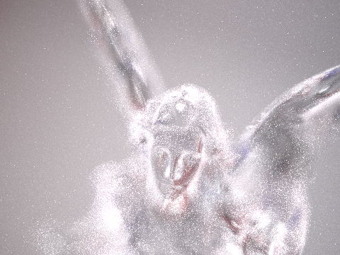

This project extends the pinhole pathtracer by adding a lens between the sensor plane and the world. Part 1 implements ray tracing through the lenses, which gives some realistic camera effects such as depth of field. Part 2 implements autofocusing by evaluating how in focus a selected patch of image is on diffent sensor depths.
Part 1: Ray Generation and Intersection
Implementation
Refract a ray using Shell's law (http://graphics.stanford.edu/courses/cs148-10-summer/docs/2006--degreve--reflection_refraction.pdf):
Calculate n as follows and flip n if r.d.z * radius < 0
n = (hit_p-Vector3D(0,0,center)).unit()
In trace_backwards, instead of using prev_ior, the next len's ior is passed in and flipped in refract function.
Calculate infinity_focus, near_focus, focal_length and focus_depth as following (epsilon = aperture/150):infinity_focus: trace a ray that starts from (epsilon,0,front_lens_z-10) and travel in (0,0,1) direction. Find its intersection F' with z axis after trace_backwards.
focal_length: Find the imaginary intersection P' of the above ray before and after pass through the lengths. Focal length = |P'.z - F'.z|
near_focus: appoximate the closest object's distance as front_lens_z - (1 + log(focal_length))*focal_length.
Trace a ray that shoots from (0,0,closest_object_distance) to (epsilon,0,front_lens_z), trace_backwards and find intersection with z axis.
focus_depth(d): Shoot a ray from (0,0,d) to (epsilon,0,back_lens_z), trace and find intersection with z axis.
back_lens_sample is implemented by rejection sampling.
generate_ray is implemented by shooting a ray from sensor point to the random sample on back_lens. If this ray doesn't pass the lenses successfully, return a ray that starts from sensor and shoot away from the lens.
Difference between pinhole camera and a lens system.
Depth of field In pinhole camera, every point is in foucs. In lens model, things may go out of focus and become blur. This depth of field changes according aperture size, focal length and the distance of object in the lens model.
Perspective effect: In pinhole camera, there's no persepctive effect. In lens model, when wide-anlge and fisheye lens are used, there're distortions at peripheral caused by perspective effect.
Field of view: In pinhole camera, the field of view only depends on the sensor size and sensor depth. In lens camera, the field of view may be wider of narrower depending on which type of lens you are using. (Wide-angle's field of view is wider and telephoto narrower)
Conjugate points on 4 lenses

| |
|
| |
|
|

|

|
The parameters of the four lenses
| Lens | focal length(mm) | infinity depth(mm) | close object distance(mm) | close sensor depth(mm) | lens info |
| #1 | 50.3581 | 51.2609 | 264.605 | 62.7566 | D-GAUSS F/2 22deg HFOV |
| #2 | 22.0234 | 28.7634 | 109.048 | 34.5796 | Wide-angle (38-degree) lens. Nakamura. |
| #3 | 249.566 | 188.758 | 1646.2 | 236.875 | SIGLER Super achromate telephoto, EFL=254mm, F/5 |
| #4 | 9.99116 | 28.7436 | 60.8501 | 31.1804 | Muller 16mm/f4 155.9FOV fisheye lens |
The inverse relationship between sensor depth and its world-side conjugate
In the following plots, several outliers where the world-side conjugate is extremely large is not shown for the sake of plotting.|
|

|
|
|
|
|
|

|

|

|
Result
|

|
|
|
Part 2: Contrast-based autofocus
In this part, a small patch of image (cell) is seleted to focus on. A focus metric that evaluate how focused is used and the sensor plane is moved to where the metric achieve the optimal value.Focus metric
I use the variance of cell pixels for focus metric:
var = sum((X_i - mean(X))^2)/n
where X_i are the intensity of the pixels and n is the total number of pixels.
Since there are 3 color channels, we take the average:
metric = (var_R+var_G+var_B)/3
When the cell goes out of focus and gets blurred, pixels appear more alike each other. Thus the variance is low. Higher contrast means more difference and thus leads to higher variance. So the higher the metric, the more focused the cell is.
Autofocus heuristic
I enumerate every sensor depth from infinity focus depth to close focus depth with a small step size to find the one that has the highest focus metric. The step size is calculated as below:
We get:d'=C*(zi/A)We want C to be 1 screen pixel to see how much d' need to change to make screen pixels to have a noticeable difference. Thus:
C(in millimeter)=sqrt(36*36 + 24*24)/ sqrt(screenW*screenW + screenH*screenH)zi/A is the defination of f-number. From the lens specs, most lenses are f-2. Lens#3 is f-5 and Lens#4 is f-4.
Plotting the focus metric
|
|
|
|
Results
From below, we can see that autofocus doesn't work so well with telephoto. One reason might be that the object is very far from telephoto lens so the pathtracer gives very noisy results, even only rendering a small cell. The noise affects metric's prediction of contrast level.
|
|

|
|
|
|
|